Wing CountryWhat to call 'em (18)
Flat, drum, party wing, wet, dry, naked, extra crispy.
A (2)
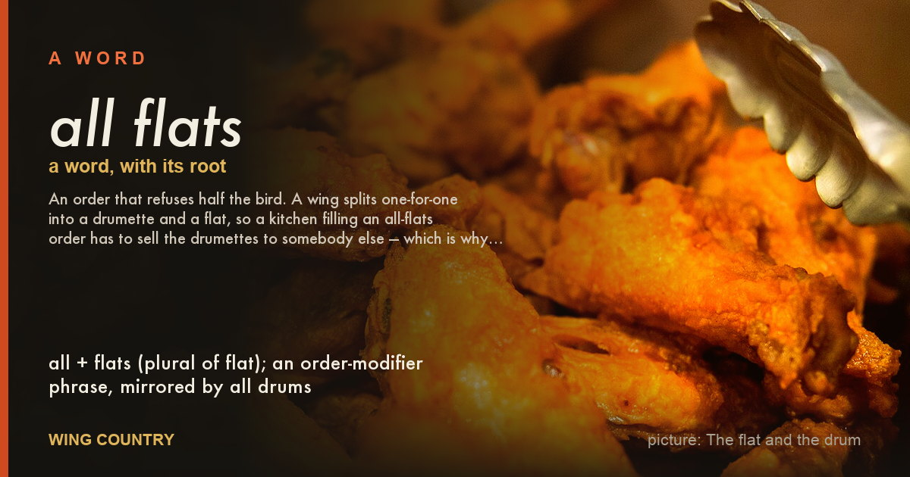
all flatsall drums, all flats no drums, flats only
An order that refuses half the bird. A wing splits one-for-one into a drumette and a flat, so a kitchen filling an all-flats order has to sell the drumettes to somebody else — which is why the answer is often no, and…
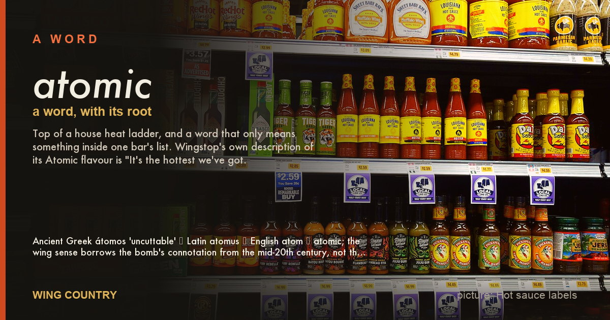
atomicatomic wings, nuclear, triple atomic
Top of a house heat ladder, and a word that only means something inside one bar's list. Wingstop's own description of its Atomic flavour is "It's the hottest we've got.
B (2)
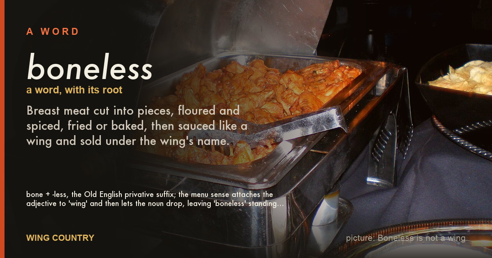
bonelessboneless wings, wyngz, boneless bites
Breast meat cut into pieces, floured and spiced, fried or baked, then sauced like a wing and sold under the wing's name.
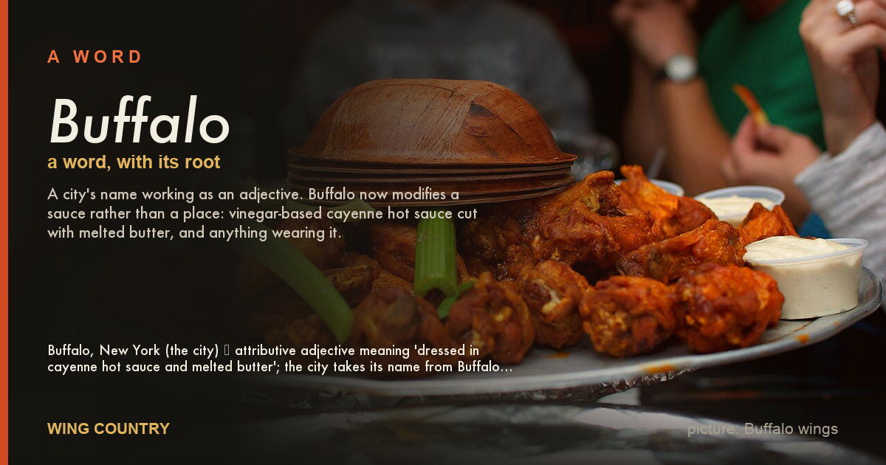
Buffalobuffalo-style, buffalo sauce (attributive)
A city's name working as an adjective. Buffalo now modifies a sauce rather than a place: vinegar-based cayenne hot sauce cut with melted butter, and anything wearing it.
D (1)
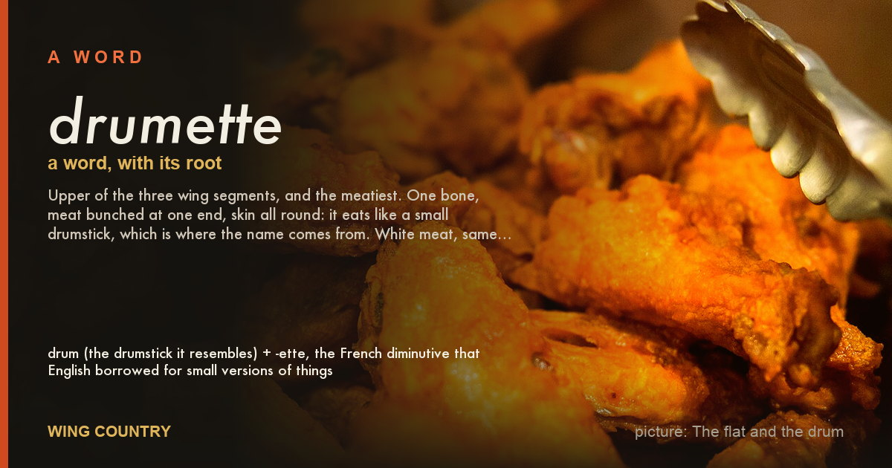
drumettedrum, drums, wing drumette
Upper of the three wing segments, and the meatiest. One bone, meat bunched at one end, skin all round: it eats like a small drumstick, which is where the name comes from. White meat, same as the breast. Two per bird.
E (1)
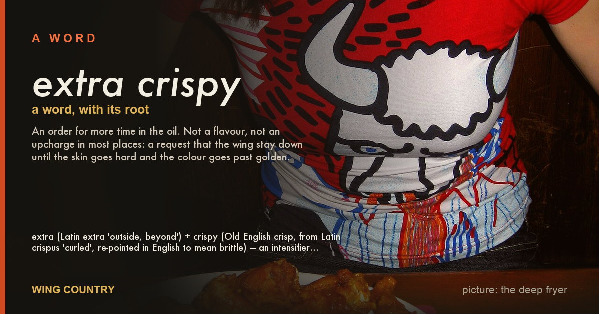
extra crispywell done, hard fried, crispy
An order for more time in the oil. Not a flavour, not an upcharge in most places: a request that the wing stay down until the skin goes hard and the colour goes past golden.
F (2)
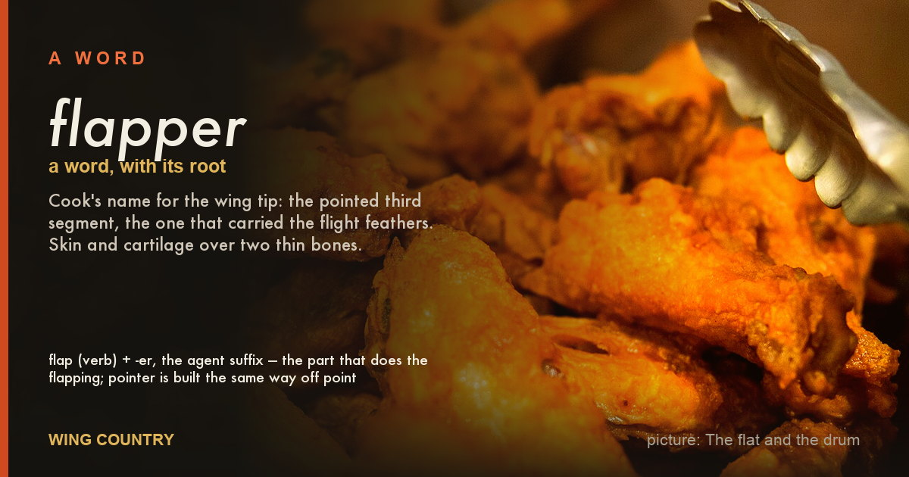
flapperpointer, flipper
Cook's name for the wing tip: the pointed third segment, the one that carried the flight feathers. Skin and cartilage over two thin bones.
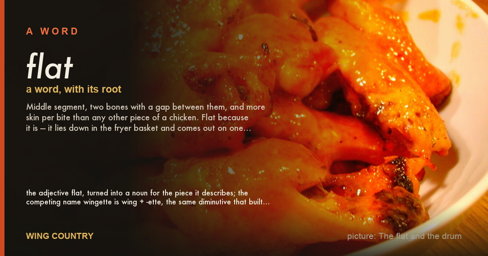
flatwingette, flats, wing flat
Middle segment, two bones with a gap between them, and more skin per bite than any other piece of a chicken. Flat because it is — it lies down in the fryer basket and comes out on one plane. Two per bird.
H (1)
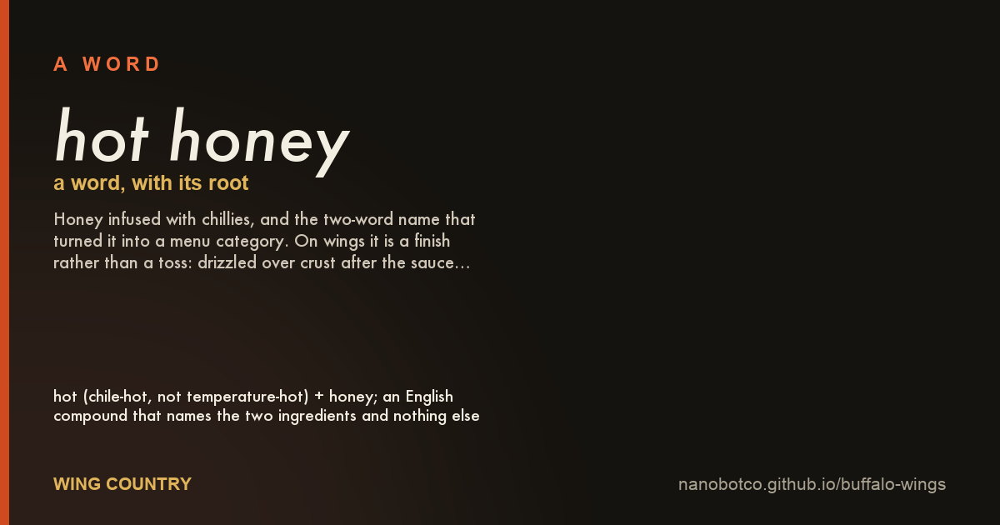
hot honeychili honey, spicy honey
Honey infused with chillies, and the two-word name that turned it into a menu category. On wings it is a finish rather than a toss: drizzled over crust after the sauce, or whisked into a sauce to sweeten and thicken it.
M (2)
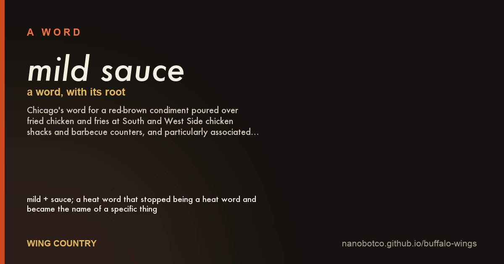
mild saucemild
Chicago's word for a red-brown condiment poured over fried chicken and fries at South and West Side chicken shacks and barbecue counters, and particularly associated with Black communities in Chicago.
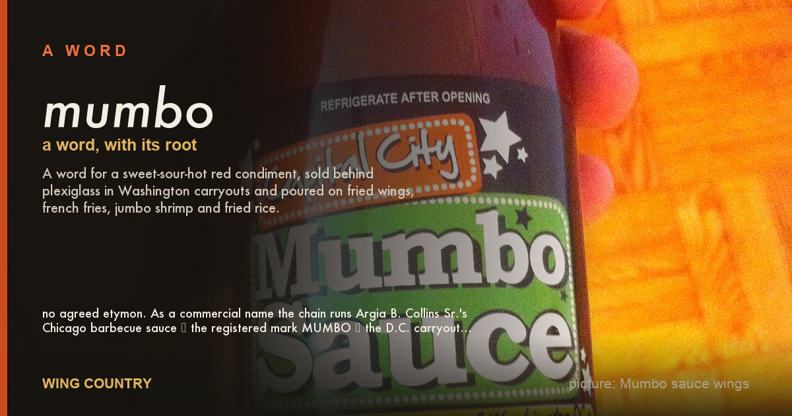
mumbomambo, mumbo sauce, mambo sauce
A word for a sweet-sour-hot red condiment, sold behind plexiglass in Washington carryouts and poured on fried wings, french fries, jumbo shrimp and fried rice.
N (1)
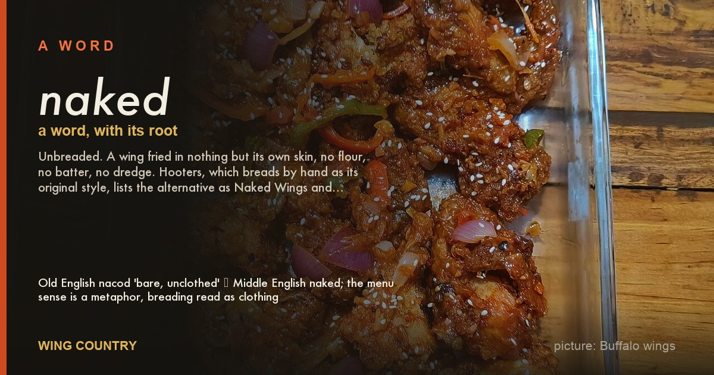
nakednaked wings, unbreaded
Unbreaded. A wing fried in nothing but its own skin, no flour, no batter, no dredge. Hooters, which breads by hand as its original style, lists the alternative as Naked Wings and describes them: "Traditional style.
P (1)
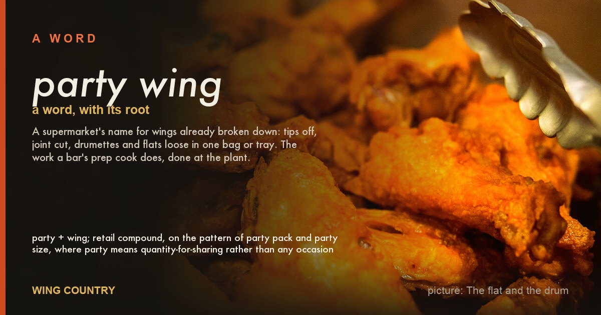
party wingparty wings, wingettes and drumettes, split wings
A supermarket's name for wings already broken down: tips off, joint cut, drumettes and flats loose in one bag or tray. The work a bar's prep cook does, done at the plant.
W (5)
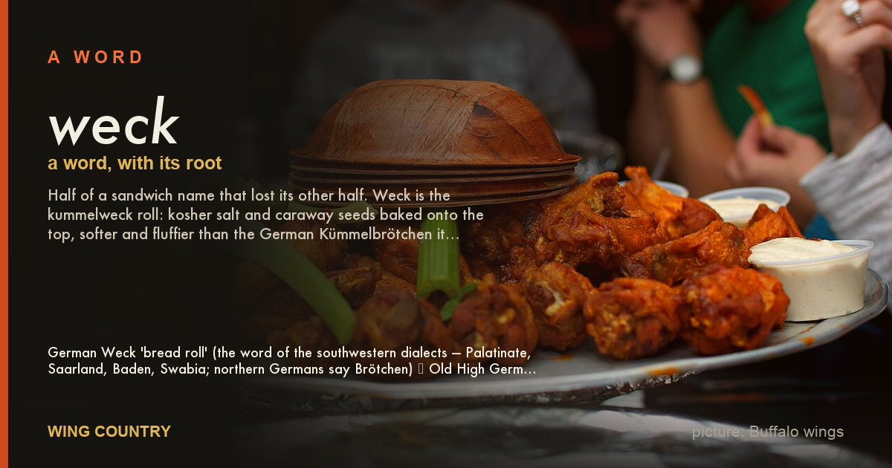
weckkummelweck, kümmelweck, kimmelweck
Half of a sandwich name that lost its other half. Weck is the kummelweck roll: kosher salt and caraway seeds baked onto the top, softer and fluffier than the German Kümmelbrötchen it descends from.
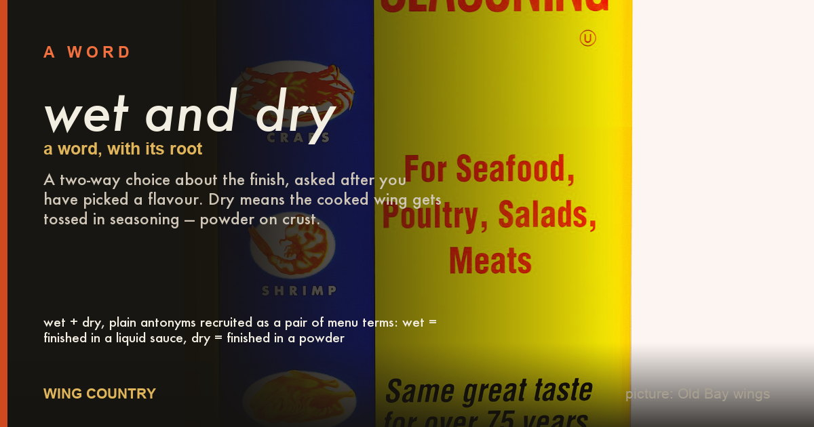
wet and drylemon pepper wet, dry rub, wet
A two-way choice about the finish, asked after you have picked a flavour. Dry means the cooked wing gets tossed in seasoning — powder on crust.
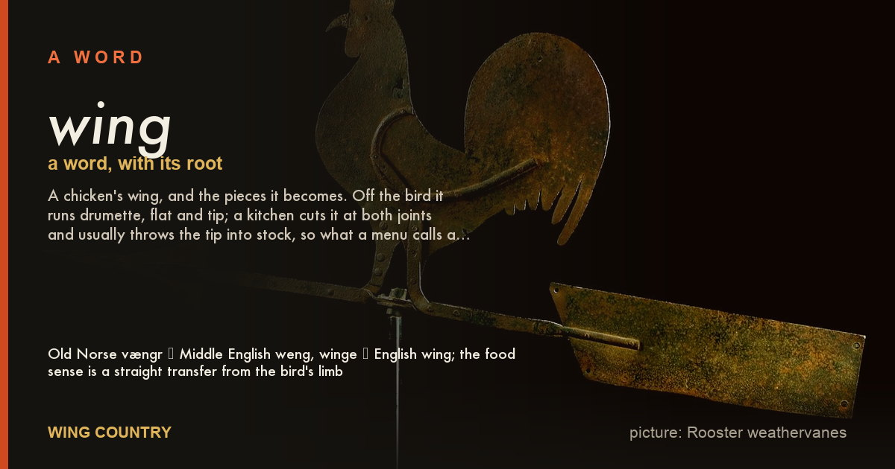
wingchicken wing, wings
A chicken's wing, and the pieces it becomes. Off the bird it runs drumette, flat and tip; a kitchen cuts it at both joints and usually throws the tip into stock, so what a menu calls a wing is one of two pieces.
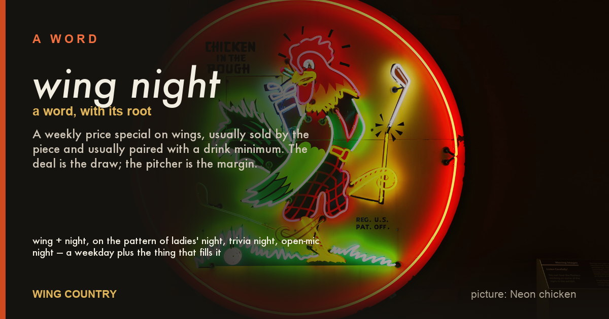
wing nightWing Wednesday, wing special, 25-cent wings
A weekly price special on wings, usually sold by the piece and usually paired with a drink minimum. The deal is the draw; the pitcher is the margin.
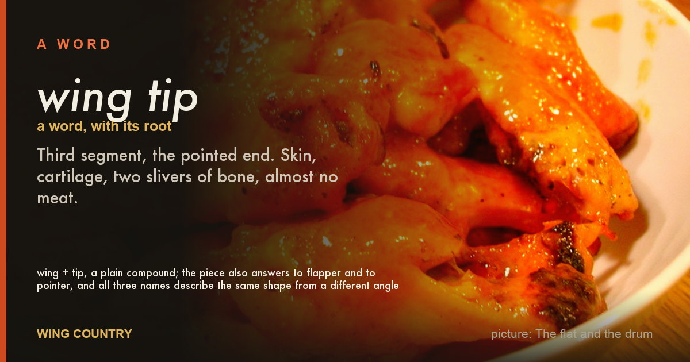
wing tiptip, wingtip, third segment
Third segment, the pointed end. Skin, cartilage, two slivers of bone, almost no meat.